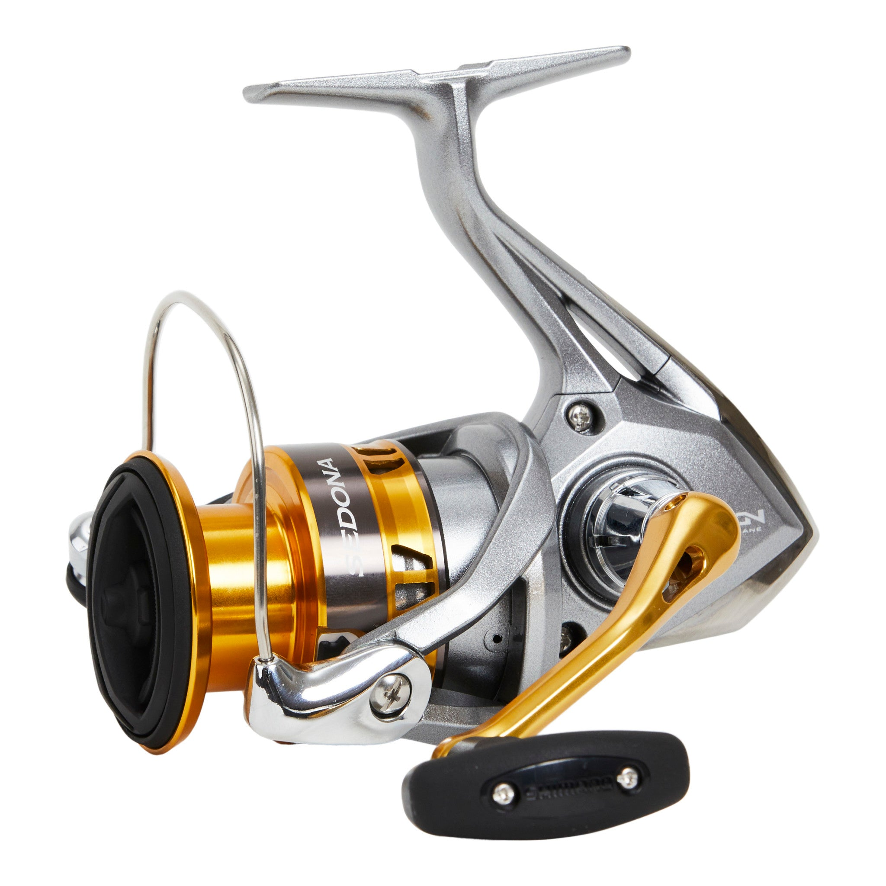

ReelCalc Reel Setup Guide
Shimano Sedona FI C5000XG Line Capacity & Reel Setup Guide
For heavy freshwater and larger-lure inshore fishing, the Shimano Sedona FI C5000XG pairs 6.2:1 gearing with a listed 41-inch retrieve per turn at full spool. The Propulsion Line Management spool design supports line release during casting, while HAGANE Gear supports the drivetrain during retrieves. The calculator below is already set to this reel, whether you want a full spool of main line or backing under a working section.